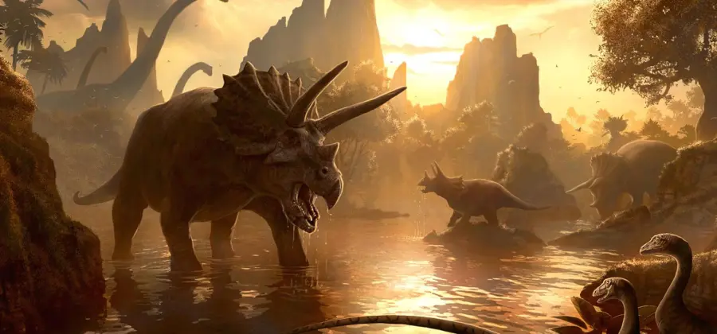
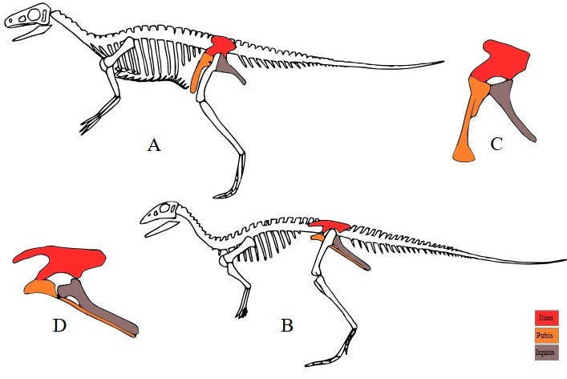

.
Hola para empezar gracias por empezar a ver esta pagina web, en la parte inferior encontraras unos botones por si buscas un tema en concreto pero si no sabes que son los dinosaurios entonces sigue bajando por que en seguida te lo voy a explicar
Mucho antes que los seres humanos, los dinosaurios vivieron en el planeta, hace millones de años. Los dinosaurios fueron grandes y prehistóricos reptiles terrestresque vivieron durante la “Era de los Reptiles” o lo que ahora llamamos la “Era Mesozoica”. La palabra “dinosaurio” viene de las palabras griegas para “lagarto aterrador”. El nombre fue acuñado en 1842 por un profesor inglés de anatomía comparativa y fisiología, llamado Sir Richard Owen. Al final de la Era Mesozoica, los dinosaurios y muchas otras especies se extinguieron. Las causas de este hecho todavía son un misterio.Un error muy común es pensar que todos los dinosaurios habitaron en la Tierra al mismo tiempo. Como ya se dijo, los dinosaurios vivieron en la Era Mesozoica, que se divide en tres períodos de menor tamaño. En primer lugar estuvo el período “Triásico”, hace 254-204 millones de años. El siguiente fue el período “Jurásico”, hace 204-140 millones de años. Por último, estuvo el período “Cretácico”, hace 140-65 millones de años. Durante estos períodos se desarrolló una enorme variación entre los diferentes dinosaurios. Por ejemplo, los dinosaurios que vivieron durante el período Triásico eran dinosaurios herbívoros mientras que los que vivieron durante el período Cretácico eran principalmente carnívoros, como el famoso Tyrannosaurus Rex.
A diferencia de todos los demás reptiles, los dinosaurios eran un grupo de reptiles con características físicas disímiles. Algunos eran bípedos, es decir, que caminaban sobre dos patas, mientras que otros eran cuadrúpedos porque caminaban con cuatro patas. Ciertos dinosaurios fueron muy lentos y pesados, mientras que otros utilizaban la velocidad para capturar a sus presas. Unos se protegían de los depredadores mediante estructuras corporales blindadas, algunos tenían cuernos, picos, crestas o terminaciones óseas. También existieron dinosaurios con la piel gruesa y llena de baches, mientras que otros tenían incluso plumas primitivas.
A diferencia de los reptiles que vemos hoy en día, los dinosaurios caminaban con sus patas directamente debajo de sus caderas. Por ejemplo, los cocodrilos se mueven gateando por el suelo y casi parecen estar arrastrándose sobre sus vientres. Los dinosaurios caminaban de manera erecta.
Estas enormes criaturas tenían un agujero en el cráneo, situado entre la cuenca del ojo y la fosa nasal, tenían tres o más vértebras sacras ubicadas cerca de la pelvis y con las extremidades directamente debajo de su cuerpo. Todos los dinosaurios poseían un gran músculo en el húmero, músculos en la mandíbula extendiéndose hacia la cima del cráneo, así como estructuras bien desarrolladas en la cadera, las rodillas y tobillos con fines de movimiento.
Muchos científicos también creen que los dinosaurios fueron en parte “de sangre caliente”, porque en vez de controlar la temperatura corporal de acuerdo al entorno, utilizaban su metabolismo para controlarla. En oposición, otros reptiles como las serpientes y lagartos, ajustan su calor corporal moviéndose hacia el sol o la sombra según sea necesario.
Para el común de los mortales, que no tiene por qué saber identificar los diferentes huesos, existen algunas simples guías para determinar grosso modo qué es un dinosaurio y qué no lo es. En concreto, hay tres características fácilmente distinguibles en un esqueleto que pueden ayudar a identificarlos con un margen de error relativamente pequeño.
En primer lugar, los dinosaurios eran, con una sola excepción -las aves, de las que hablaremos más adelante- animales terrestres: incluso el terrible Spinosaurus, que durante décadas ha sido el paradigma de “dinosaurio anfibio”, no lo era tanto según los últimos estudios. Esto excluye automáticamente a reptiles acuáticos con extremidades en forma de aletas y que, como ya se ha dicho antes, no eran dinosaurios; y también a los voladores, cuyas extremidades anteriores están desarrolladas específicamente para poseer membranas y vivir en el aire.
¡Claro! La clasificación de los dinosaurios se basa en la estructura de la cadera. Hay dos grupos principales de dinosaurios según la forma de sus caderas:
Estos dinosaurios conservaron la estructura de la cadera de sus antepasados. El hueso del pubis en su pelvis apunta hacia adelante y hacia abajo, casi verticalmente1. Los saurisquios se dividen en dos grupos principales:
En estos dinosaurios, el hueso del pubis se coloca más horizontalmente y apunta hacia la cola2. Los ornitisquios incluyen dinosaurios como los estegosaurios, triceratops y hadrosaurios.
Así que, si encuentras fósiles de dinosaurios y quieres identificarlos por la cadera, observa la orientación del hueso del pubis. Si apunta hacia adelante y hacia abajo, es probable que sea un saurisquio. Si apunta hacia la cola, es más probable que sea un ornitisquio.
